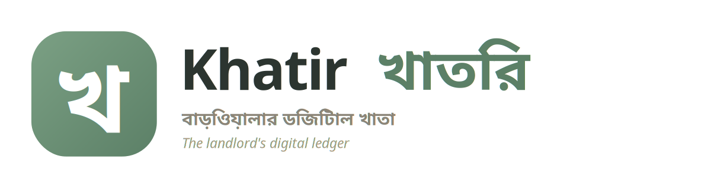

Key screens laid out side-by-side for review, plus three visual directions for the Landlord home so you can pick a feel. Every frame is the real prototype render — open the prototype to tap through the full flows.